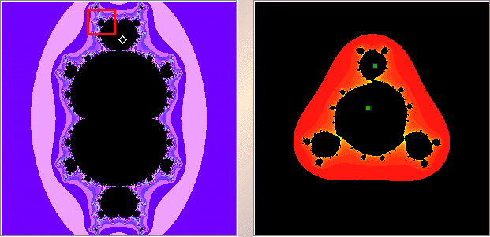

|  |
| The left window shows the cubic Mandelbrot set (for |
| In the right window, shift-click or right click near |
| We obtain a |
| Click the red box to magnify that box. |
| After going through these exercises, here is a compilation of the results. |
Return to Samples.